The Polar Gap: Open Hyperspectral Coverage Above 70° North
A Baffin Island case study at 73.7° N, extended to every cryosphere scene in the open Tanager catalog: what the surface-reflectance product supports over bright snow and ice, what it does not yet, and why the polar gap matters.
Every spring the Arctic coast begins to melt, and how fast it melts depends on properties of the snow and ice surface that almost nothing in orbit can currently measure. The one instrument class that could, an imaging spectrometer, either cannot reach the high Arctic or does not fly there openly. Tanager can, and does. Pointed at the Baffin Island coast at 73.7° N in the first week of melt, it delivers a floe-by-floe map of snow grain state across an entire marginal ice field, and enough spectral detail to catch an error in the product's own atmospheric processing that makes surface melt unreadable in half the released polar scenes. We diagnose that error, show it recurs across the catalog, and hand Planet a fix while the product is still in Public Beta. The instrument is sensitive enough to grade its own processing chain. What it needs now is scenes. Just 3 of the 153 in the open catalog lie above 70° N.
§ Key claims
Access, established as fact
At 73.7° N, Tanager is the only imaging spectrometer with an open catalog that can see this scene at all. EMIT is excluded by its ISS orbit (~52° inclination) and PRISMA by its 70° N acquisition envelope; EnMAP can task the site but is a single on-demand mission with competed tasking. Sentinel-2 does fly here, and carries no surface band between 958 and 1565 nm, exactly where the 970 nm liquid-water and 1030 nm grain features sit. Under nominal band models the spectrometer fleet would sample these features equally well (EnMAP 97%, EMIT 97%, PRISMA 95%, Sentinel-2 0%), so the differentiator at this latitude is access, not spectroscopy. That is a statement about orbits and band placement, not a contested measurement.
Floe-scale snow grain state, resolved
A Nolin–Dozier grain retrieval carrying calibrated per-pixel uncertainty (89.9% empirical coverage against a 90% target) resolves floe-to-floe grain variability across the marginal ice field at roughly 4× its spatially-corrected standard error, which is the quantity albedo-feedback work actually needs. We are equally clear about the limit: per-pixel class means are not resolved.
Surface melt is not evaluable from this product, and that is the finding Planet can act on
Read as liquid water, the retrieval implies 17–47% liquid in three of six surveyed cryosphere scenes, at or above the largest fraction ever measured for late-season Arctic melt, over cold April-to-June snowpack. On Baffin the mechanism is visible directly: a one-signed residual notch at the 941 nm water-vapor band core (−8.5× per-pixel uncertainty; 42% improvement in fit RMS) that no surface process can produce. Resolving a 13 nm artifact at a band core takes ~5 nm sampling over a scene at this latitude, so this audit is itself a demonstration of the instrument's diagnostic power, not a mark against it. The product is in Public Beta, and the finding ships with two cheap screening metrics and a concrete fix, inside the window where it can still be acted on.
Every retrieval and every guard was validated on synthetic data in both directions, including deliberately null cases, before touching the scene. Full pipeline and tests: github.com/alecbiles-code/tanager-ice.
◆ Results at a glance
| Result | Value | What it establishes |
|---|---|---|
| Catalog-wide melt confound | 3 of 6 open cryosphere scenes imply 17–47% liquid water | exceeds the largest value ever measured for late-season Arctic melt → recurring, not one scene |
| Retrieved AOD, catalog-wide | above Arctic-summer climatology in 5 of 6 scenes (0.06–0.99) | elevated aerosol retrieval over bright cryosphere is systematic |
| AOD–surface coupling (Baffin) | within-class r = 0.38; quintile-resolved 0.40 | AOD partly surface-driven; shape-based retrievals required |
| Vapor-band residual (Baffin) | one-signed 941 nm core notch, −8.5× per-pixel uncertainty; fit RMS improves 42% | AC vapor stage leaves band-shaped structure in the SR product |
| Melt retrievability | not evaluable from this SR product | mechanism diagnosed; fix identified (vapor screening / radiance domain) |
| Grain brightness test | global r = +0.44; within-bin r spans −0.63 to +0.26 | no single stable brightness confound; test at fixed albedo instead |
| Grain class separation at fixed albedo | mean 0.9× IQR (0.3–1.8 across bins) | real but marginal material signal |
| Per-pixel interval vs class gap | half-width 3.1 vs separation 0.43 | per-pixel class means not resolved |
| Floe-scale grain variability | spread 1.21 vs corrected SE 0.32 | floe-to-floe differences resolved (effective-N corrected) |
| Fleet band-placement retention | EnMAP 97% / EMIT 97% / PRISMA 95% / S2 0% | band placement equivalent across spectrometers; S2 structurally blind |
| Open catalog above 70° N | 3 of 153 scenes | the polar catalog is nearly empty |
1. The blind spot in Arctic observation
Every spring the Arctic coast begins to melt, and the timing and pattern of that melt govern how much sunlight the surface absorbs. The snow- and ice-albedo feedback is a central amplifier of Arctic warming. The surface properties that drive it are snow grain size and the presence of liquid water. The Arctic is warming at around three to four times the global average rate, and this feedback is one of the main reasons why: melting snow and ice replace the brightest natural surface on Earth with one of the darkest, so each increment of melt buys the next one. The moment the melt begins, it sets the trajectory of the entire season, and there is essentially no open spaceborne hyperspectral coverage of the Arctic coast at all.
The difficulty is a gap between two classes of instrument. The imaging spectrometer that could resolve surface state (EMIT) physically cannot reach the high Arctic: it observes from the International Space Station, whose ~52° orbital inclination places the Arctic coast outside its swath. Meanwhile the multispectral sensors that do fly there cannot see the diagnostic features: Sentinel-2 carries no surface band between 958 and 1565 nm (B10 at 1375 nm is a cirrus channel excluded from L2A surface products), and both the 970 nm liquid-water and 1030 nm grain features fall inside that gap. The right spectral tool is in the wrong orbit; the right orbit carries the wrong spectral tool. The rest of the spaceborne spectrometer fleet does not close the gap either: PRISMA's acquisition envelope stops at 70° N, and EnMAP is a single on-demand mission (Section 5 quantifies this). Tanager can fill this hole. Whether it does depends on release decisions: only 3 of the 153 scenes in the open catalog we surveyed lie above 70° N, and only 7 carry the snow-and-ice designation at any latitude.
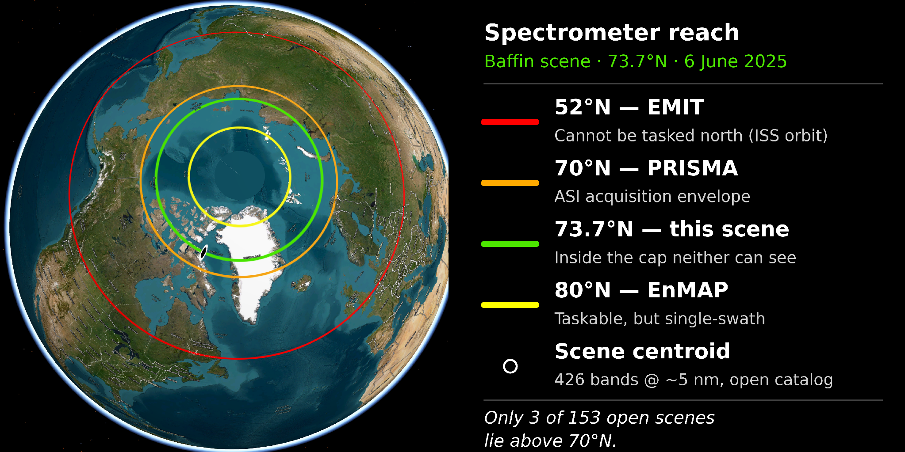
2. The scene, and the catalog around it
Baffin Island coast, Nunavut · 73.7° N · 6 June 2025. A melt-onset acquisition holding three cryosphere regimes in one frame: snow-covered mountain terrain (coregistered Copernicus GLO-30 DEM: 0–278 m relief, 44% land), sea ice from consolidated floes to a broken marginal-ice field, and open water. Near-nadir (4°), solar elevation 38.6° (zenith ~51°), 33.3 m sampling. The full footprint (73.61–73.82° N) clears EMIT's reach. Detailed retrievals below use this scene; Sections 3 and 4.2 then test their conclusions against all seven snow-and-ice scenes in the open catalog (six analysed; one carries only 156 bright-cryosphere pixels and is reported as skipped), spanning 56–76° N and April to June.
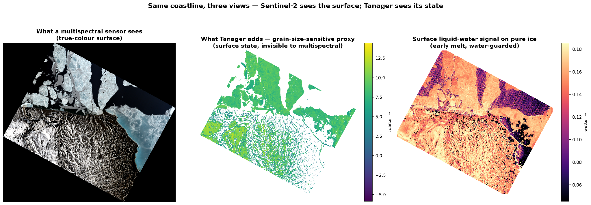
3. The aerosol term couples to the surface
In one line: the correction's aerosol term is partly tracking the surface beneath it, the first sign that atmosphere and surface are not cleanly separated over bright snow.
A note on product status first, because it frames everything below: Tanager surface reflectance is a Public Beta product, stable enough for broad use, not yet a final release version. What follows is offered as beta-window feedback with transferable diagnostics attached, not as a verdict on a finished product.
The retrieved aerosol optical depth over the Baffin scene averages 0.70, roughly seven times the Arctic-summer background of ~0.05–0.15 (MODIS/AERONET climatology), and the AOD map visibly traces surface features, down to individual valleys. High AOD alone could be real transported smoke; the diagnostic is the spatial coupling. Within the single sea-ice class, AOD correlates with surface brightness at r = 0.38, and the strongest within-brightness-quintile coupling reaches 0.40, a pattern a genuine aerosol field, smooth over tens of kilometres, cannot produce inside a narrow brightness stratum of one surface type. Mean AOD also steps by 0.23 across the coastline, though that step could partly reflect differently conditioned retrievals over water versus snow, so the within-class coupling is the cleaner tell. The atmospheric correction is ISOFIT-family optimal estimation, solving atmosphere and surface jointly; over bright, spectrally flat snow that inversion is known to be ill-posed, and this scene shows the expected symptom: surface structure leaking into the atmospheric term.
Across the catalog the elevation is systematic but the coupling is not. Retrieved AOD exceeds Arctic-summer climatology in five of six surveyed cryosphere scenes (means 0.06 to 0.99); only the Fram Strait scene sits inside climatology at 0.063. Within-class coupling, however, clears our 0.3 threshold in only one scene under the gate we pre-registered (one-sided, r > 0.3). A second scene shows |r| = 0.49 of the opposite sign, which the one-sided gate ignored; two-sided coupling is the physically correct test, since non-separation of atmosphere and surface can go either way, and under it two of six scenes couple. We recognised that after inspecting the data, so it is reported as an observation rather than as a passed pre-registered test. The honest reading: elevated aerosol retrieval over bright cryosphere is the norm in this catalog, while demonstrable surface coupling is present in a minority of scenes, and the per-class correlation is the cheap screening metric that separates them.
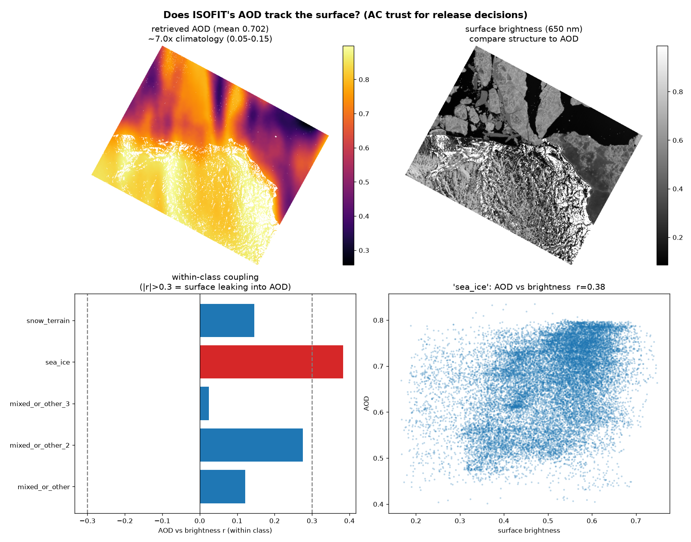
4. Surface-state retrievals, with their confounds tested
4.1 Grain-size-sensitive proxy: real but marginal
In one line: the grain signal is real and physically sound, but it is a field rather than a per-pixel label. Trust it across a floe, not inside a single 33 m pixel.
We retrieve the Nolin–Dozier 1030 nm scaled band area (Nolin and Dozier, 2000) for 196,169 ice-bearing pixels, with a normalized split-conformal interval built on Planet's per-band reflectance-uncertainty cube (empirical coverage 89.9% against a 90% target) measured against each pixel's local spatial neighbourhood, not against field truth, of which none exists here. The validity question is whether the proxy tracks grain or brightness: globally it correlates with 1100 nm reflectance at +0.44, the wrong sign for grain physics. Stratifying into six albedo bins (albedo from visible bands, independent of the 1030 nm feature) shows the within-bin coupling is sign-inconsistent, spanning −0.63 to +0.26 and trending with albedo, so there is no single stable brightness confound to remove; the informative test is instead whether the surface classes still separate at fixed brightness. They do at the bright and dark ends (up to 1.8× the within-class IQR) but nearly merge in the mid-albedo range (0.3–0.4× IQR), plausibly because mid-albedo surfaces on both land and sea are transitional and genuinely converge in grain state.
Our characterization is therefore modest: a real but marginal material signal. On resolution: the median per-pixel 90% half-width (3.1) exceeds the sea-ice–snow class separation (0.43), so per-pixel the class means are not resolved. Grain here is a field, not a per-pixel label. Aggregated to 22 sea-ice floes, the floe-mean standard error falls to 0.32 after deflating the sample size for spatial correlation (naive √N would claim 0.065; we use the effective-N figure). That still does not resolve the small between-class mean difference, but the floe-to-floe grain spread of 1.21 is resolved at ~4× its error: Tanager measures how grain state varies across the ice field, the physically meaningful quantity for albedo work. Two caveats: 0.3% of retrieved pixels carry unphysical negative band areas (darker mixed surfaces whose spectra dip at 940 and ~1130 nm, both atmospheric vapor bands, indicating the Section 4.2 residual dominates where the surface feature is weak); these are masked. And the 960 nm window shoulder sits near the vapor band edge, a vulnerability the class-separation results bound but do not eliminate.
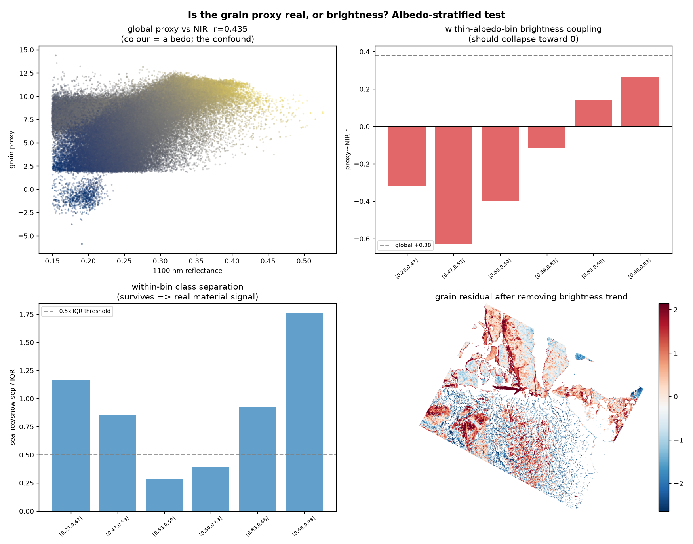
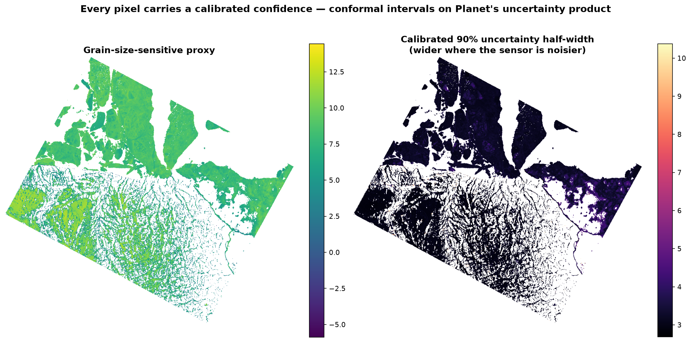
4.2 Melt is not evaluable from this product, on Baffin, and across the catalog
In one line: the 970 nm melt signal in this product is not melt. It is the atmospheric correction's own vapor-band residual, and the melt fractions it implies are physically impossible.
The 970 nm feature is the natural melt indicator. We guarded it against sub-pixel water mixing (unmixing test: r = −0.09 against water fraction, validated in both directions) and then subjected it to a chain of physical controls. An ice-only spectral control produced a 970 nm residual too ambiguous to attribute, its model misfit the window. We therefore rebuilt the retrieval on the physical two-component model the field uses (Green et al., 2002): asymptotic radiative transfer makes (ln CR)² linear in the published absorption spectra of ice (Warren and Brandt, 2008) and liquid water (Segelstein, 1981), so each pixel is a regression against literature bases that are near-orthogonal over the window.
On Baffin the result is decisive, in an unexpected direction. The water loading is enormous (the median pixel's loading is 26× its per-pixel fit uncertainty) but fails physics: read as liquid water it implies a scene-wide fraction near 0.43, i.e. 43% liquid across 200,000 ice pixels including cold high-terrain snowpack at melt onset, where late-season Arctic measurements reach 6.5–17.3% (Rosenburg et al., 2023). The scene-wide absorption minimum sits near 996 nm where dry ice sits at ~1029. Adding a narrow template at the 941 nm atmospheric vapor band core to the same regression exposes the mechanism: a one-signed notch of missing absorption at exactly the vapor band core (−8.5× per-pixel uncertainty), improving the fit RMS by 42%. No surface process produces a narrow negative absorption feature at precisely the atmospheric band centre; this is the fingerprint of the vapor correction stage, over-corrected at the band core, with broad residual wings that are spectrally degenerate with the liquid-water shape at 5 nm sampling.
The catalog survey converts this from an anomaly into a characterization. Running the same decomposition over every analysable cryosphere scene in the open catalog, three of six imply liquid-water fractions of 17.3%, 23.0% and 47.4%, at or above the largest fraction ever reported for late-season Arctic melt, in April to June, at 65–74° N. The other three return 1.8%, 2.6% and 4.2%, entirely plausible for early season. This argument rests on physical plausibility against published measurements alone: no uncertainty model, no bias floor and no template calibration enters it. The 940–1000 nm confound is therefore a recurring property of this product over bright cryosphere surfaces, present in half the scenes we could analyse, rather than a feature of one unusual acquisition.
Three candour notes on what we do not claim. Pixels are spatially correlated, so we make no scene-level significance claim; the falsification rests on the impossible magnitude, not on a σ. The 941 nm loading's absolute zero point is not calibrated: a narrow template carries a scene-dependent bias floor (~+1.7× on synthetic clean spectra), so only the scene-to-scene spread (−9.0 to +5.8 across the survey) is interpretable, and a smooth-infill null we built to remove that floor proved invalid wherever the residual's wings extend past the infill window, so it is tested per scene and never subtracted when invalid. Finally, the vapor and water loadings are estimated from correlated bases (r ≈ 0.31), so their errors are anti-correlated by construction; any association between the two therefore cannot by itself demonstrate aliasing, and we do not use it as evidence. A purely spectral-calibration shift would imprint a bipolar, derivative-shaped residual, whereas the observed notch is one-signed, pointing to band-strength over-correction, though we do not localize the cause within the correction chain.
Conclusion: surface melt is not evaluable from this product's 940–1000 nm region, not because the retrieval failed, but because the region carries vapor-band-linked residual structure that any liquid-water retrieval will alias, in half the cryosphere scenes currently released. Two transferable screening metrics fall out: the per-class AOD-versus-brightness correlation of Section 3, and the implied-liquid-fraction plausibility check used here, which needs only a two-component fit and a literature bound. The fix is identified: vapor-residual screening of released scenes, or radiance-domain retrieval (Bohn et al., 2025). During a Public Beta this is exactly the feedback that can still be acted on before v1.
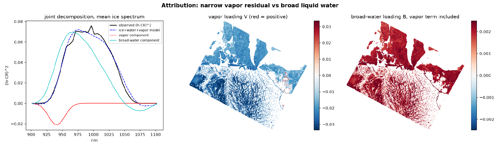
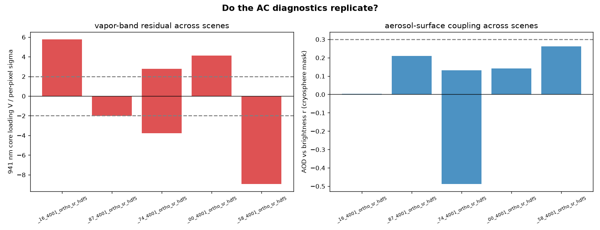
5. The capability gap is access, not spectroscopy
In one line: four spectrometers could see these features. Only Tanager currently flies where they occur, with an open catalog.
Convolving the real ice spectra to each sensor's nominal band model and recomputing the grain retrieval gives a graded answer across the fleet: EnMAP retains 97%, EMIT 97% and PRISMA 95% of the 1030 nm grain signal (per-pixel correlation ≥ 0.998; the 970 nm depth retains 90–95%), while Sentinel-2 retains none, its surface bands jump from 958 to 1565 nm. One nuance at the 970 nm boundary: Sentinel-2's B9 (945 ± 13 nm, carried in L2A at 60 m) ends at 958 nm, so its shoulder approaches but does not sample the feature. This experiment establishes band-placement equivalence, not performance equivalence. It uses Tanager's own spectra under nominal Gaussian band models; it says nothing about the other instruments' signal-to-noise, radiometric calibration, atmospheric correction or real-world retrieval quality, and it never touches EnMAP, EMIT or PRISMA data. Read narrowly, it shows only that these four instruments place bands where the cryosphere features are, and that Sentinel-2 does not. That narrow reading is enough for the argument.
What distinguishes Tanager at 73.7° N is access. EMIT cannot observe here: its ISS orbit (~52° inclination) excludes the high Arctic. PRISMA cannot either: its acquisition envelope is bounded at 70° N (ASI mission specification), 3.7° south of this footprint. EnMAP can task the site (80° N envelope) and has demonstrated cryosphere acquisitions, but it is a single 30 km-swath, on-demand science mission with a nominal end of mission in 2026 and globally competed tasking. Tanager is in polar orbit with an open catalog, but that catalog currently holds 3 scenes above 70° N out of 153, and 7 snow-and-ice scenes in total. The polar advantage is real in principle and largely unrealised in practice, which is precisely what a release decision can change. We also report the honest converse for the broadband surface-type task: simulated Sentinel-2 reaches near-parity in label reproducibility (0.95 vs 0.92), reproducibility, not accuracy, since the classifier is trained on the segmentation's own labels, and its finer native resolution (10–20 m vs 33 m) would likely exceed Tanager there in practice. Where surface type is the question, fly the multispectral sensor. Where surface material state is the question, and where the product itself must be audited spectrally, as Section 4.2 shows, only a spectrometer with access will do.
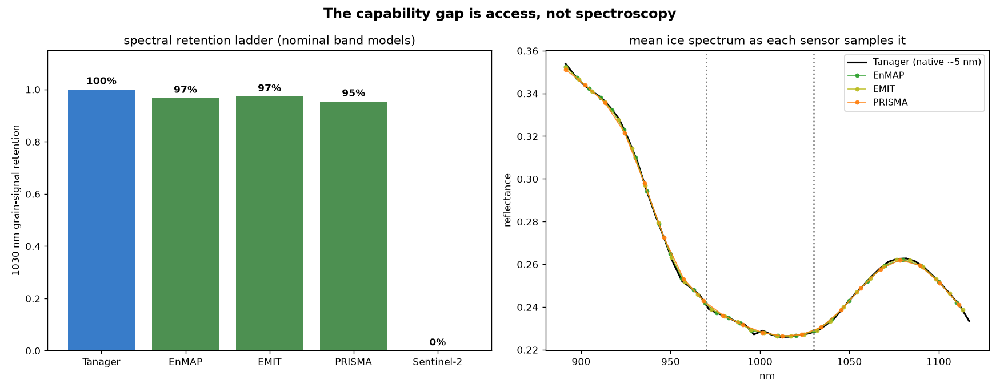
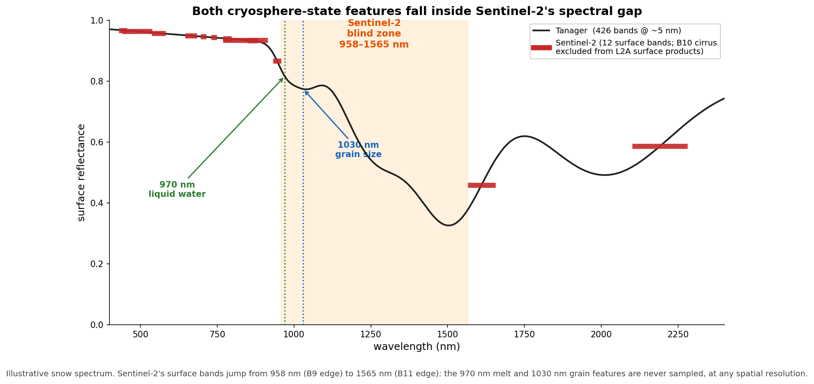
6. Limitations
There is no field validation: no in-situ measurement was coincident with any scene analysed here, and essentially none exists for open Tanager acquisitions. Uncertainty statements are calibrated precision, not accuracy. Specific limits:
Grain: the brightness relationship is sign-inconsistent across albedo rather than removed; the surviving class separation is marginal in the mid-albedo range; per-pixel class means are unresolved, and the naive √N aggregation rescue is rejected in favour of the correlation-corrected effective-N figure (5× larger). The internally consistent operator check (band area vs depth, r = 0.95) is near-tautological and is not offered as validation.
Melt: not evaluable from this product (Section 4.2). The vapor-attribution test used a 13 nm core template; the broad wings of a realistic vapor residual remain spectrally degenerate with liquid water at 5 nm sampling, which is precisely why no liquid claim is made in either direction.
The catalog survey is small and heterogeneous: six analysable scenes spanning 56–76° N and April to June, one of seven skipped for insufficient bright-cryosphere pixels. It samples the whole released cryosphere catalog, but that catalog is itself small, and elevated AOD in some scenes may be genuine spring aerosol rather than retrieval artifact, which is why the melt conclusion rests on physical impossibility rather than on the AOD level.
Fleet comparison: band placement only, on Tanager data, under nominal Gaussian response models rather than published SRFs; no claim is made about the other sensors' SNR, calibration or atmospheric correction.
Topography and solar geometry: a DEM-based C-correction with per-pixel cos(i) is applied over terrain and self-shadowed pixels are masked, but residual BRDF effects at ~51° solar zenith remain, and static DEMs are not coincident with the imagery (Wilder et al., 2024).
Methodological positioning: the field's frontier is radiance-domain optimal estimation. Bohn et al. (2025) find grain-size discrepancies up to ~200 µm between reflectance- and radiance-domain approaches. We deliberately work in the vendor reflectance product: the point is what any user of the open data can reproduce end-to-end from the shipped product, with the characterization of Sections 3 and 4.2 as the necessary companion.
7. Why release these scenes
The polar catalog is nearly empty: 3 of 153 open scenes above 70° N, 7 snow-and-ice scenes in total. The instrument's structural advantage over EMIT and PRISMA at these latitudes is currently unrealised in the open data; release decisions are what convert it.
Two transferable AC screening metrics, the per-class AOD–brightness correlation and the implied-liquid-fraction plausibility check, are already demonstrated across the whole released cryosphere catalog, and applicable to every future high-latitude scene.
Material-state retrievals that multispectral sensors structurally cannot attempt, delivered with calibrated per-pixel uncertainty built on Planet's own uncertainty product.
A concrete, falsifiable agenda: vapor-residual screening before v1, radiance-domain melt retrieval, and repeat acquisitions through a melt season on a single high-Arctic land–ice–ocean transect, which no existing open dataset provides.
The specific ask. The mechanism this competition controls is scene selection, so we name a target rather than a category. Highest value: the land–ice–ocean transect analysed here, the footprint of scene 20250606_181248_58_4001, 73.61–73.82° N on the Baffin Island coast, reacquired across a single melt season, from pre-onset in mid-April through peak melt in late July, at whatever cadence tasking allows. Ten to fifteen scenes on that one transect would constitute the first open hyperspectral melt-season time series anywhere above 70° N, and would convert every diagnostic in this memo from a single-date demonstration into a seasonal measurement. Remaining slots we would spend on latitude spread: any high-Arctic cryosphere coast above 70° N, where the open catalog currently holds three scenes in total. Both asks are cheap to satisfy and immediately testable against the screening metrics of Sections 3 and 4.2.
A high-Arctic, melt-season, coastal-transect hyperspectral scene is a scarce asset, and at present the open catalog holds almost none. This submission is a working prototype of the science those scenes unlock, including the audit of the product itself, which is the part Planet can apply to every scene it releases next.
Methods, reproducibility & references
All results come from a scene-agnostic Python pipeline (26 numbered scripts plus a tested primitives package) running end-to-end from the public STAC item: catalog reconnaissance and the EMIT-gap check; scene fetching; the stratified AC trust analysis; DEM-finalized segmentation; the grain retrieval with propagated and conformal uncertainty; the albedo-stratified confound test; the water-guarded melt retrieval, its physical two-component re-test against literature optical constants, and the vapor-attribution decomposition; the negative-band-area diagnosis; effective-N regional aggregation; the Sentinel-2 degradation comparison; the fleet sensor-ladder experiment; and the pipeline-free multi-scene AC survey. Spectral primitives carry known-answer tests; every retrieval method and every guard was validated on synthetic data in both directions, including null cases designed to return no detection, before touching any scene. Small differences between per-section values and the catalog-survey table (e.g. implied fraction 0.43 vs 0.47 on Baffin) reflect different pixel masks and a signed linearization variant used in the survey; both are reported as computed rather than reconciled after the fact. The complete pipeline, including the primitives test suite and the numbered scripts behind every figure, is public at github.com/alecbiles-code/tanager-ice.
References
Bohn, N., Bair, E. H., Brodrick, P. G., Carmon, N., Green, R. O., Painter, T. H., and Thompson, D. R. (2025): Do we still need reflectance? From radiance to snow properties in mountainous terrain: a case study with the EMIT imaging spectrometer, The Cryosphere, 19, 1279–1302.
Green, R. O., Dozier, J., Roberts, D., and Painter, T. (2002): Spectral snow-reflectance models for grain-size and liquid-water fraction in melting snow for the solar-reflected spectrum, Ann. Glaciol., 34, 71–73.
Nolin, A. W., and Dozier, J. (2000): A hyperspectral method for remotely sensing the grain size of snow, Remote Sens. Environ., 74, 207–216.
Rosenburg, S., Lange, C., Jäkel, E., Schäfer, M., Ehrlich, A., and Wendisch, M. (2023): Retrieval of snow layer and melt pond properties on Arctic sea ice from airborne imaging spectrometer observations, Atmos. Meas. Tech., 16, 3915–3930.
Segelstein, D. J. (1981): The complex refractive index of water, M.S. thesis, University of Missouri–Kansas City.
Warren, S. G., and Brandt, R. E. (2008): Optical constants of ice from the ultraviolet to the microwave: a revised compilation, J. Geophys. Res., 113, D14220.
Wilder, B. A., Meyer, J., Enterkine, J., and Glenn, N. F. (2024): Improved snow property retrievals by solving for topography in the inversion of at-sensor radiance measurements, The Cryosphere, 18, 5015–5029.
Ice and water optical constants were obtained from the public-domain refractiveindex.info tabulations of the above sources.
§ Appendix. Supporting diagnostics
Full diagnostic figures from the pipeline, including superseded intermediate analyses retained for transparency.
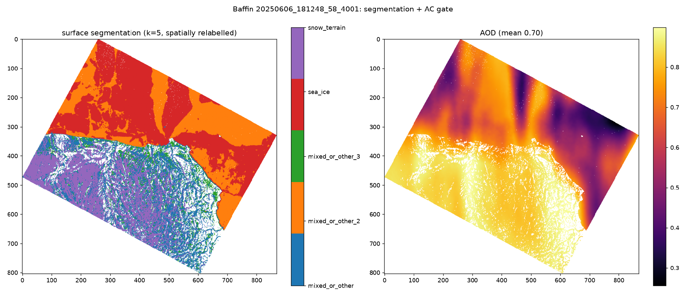
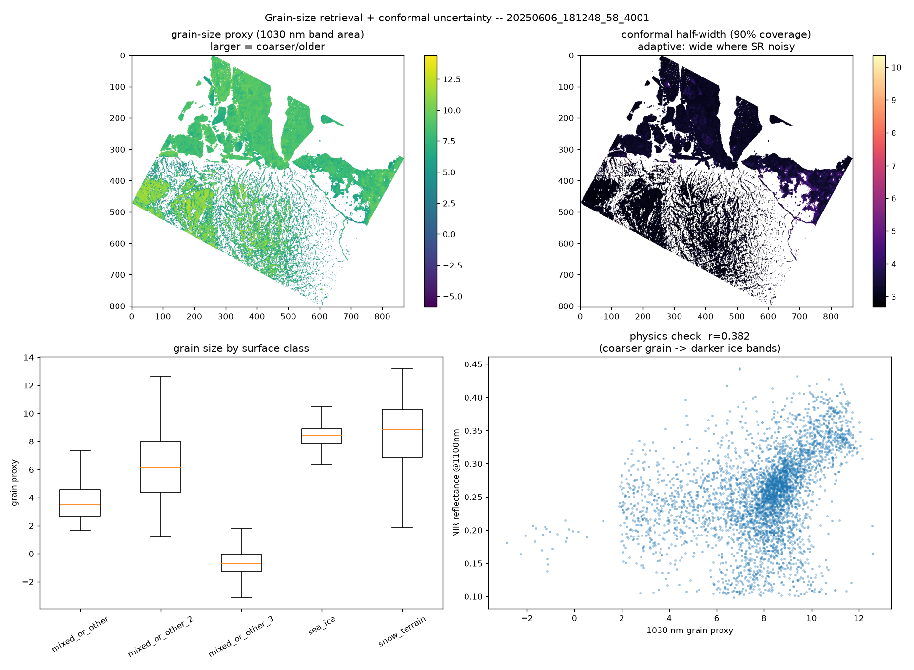
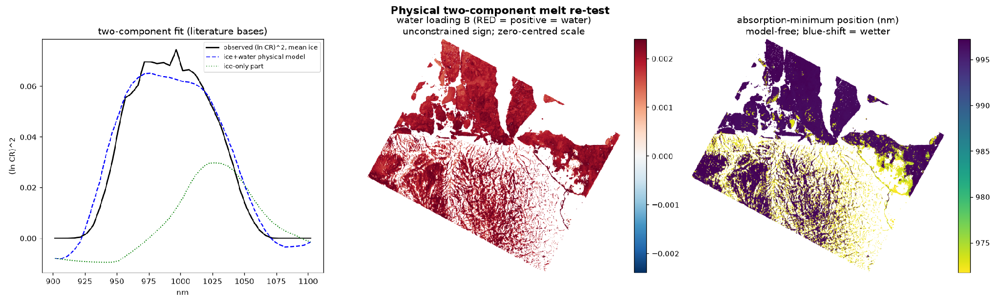
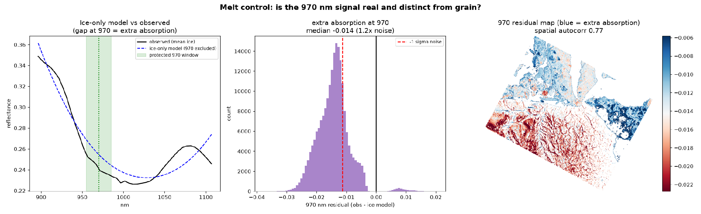
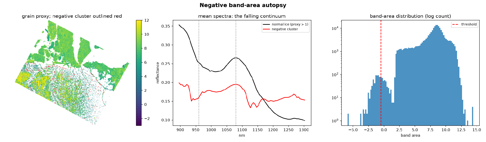
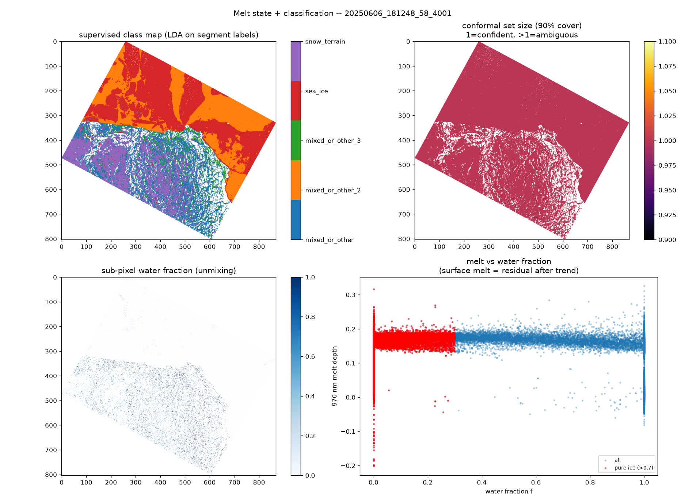
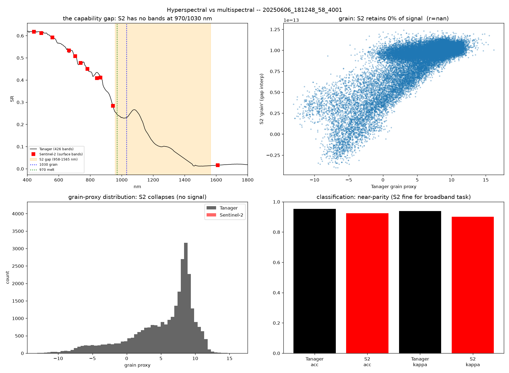